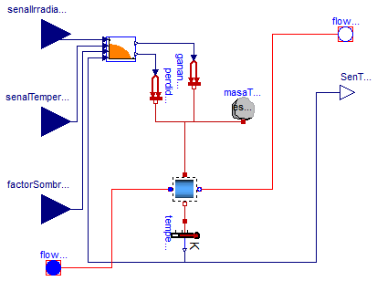

| Name | Description |
|---|---|
| Especificaciones de los distintos captadores solares | |
| ColectorSolar | Modelo de colector o captador solar |
| Ejemplos de funcionamiento de captadores solares |

Modelo de captador solar que implementa la curva de rendimiento según la norma UNE-EN 12975.
Este modelo considera que el equipo alcanza condiciones estacionarias.
| Type | Name | Default | Description |
|---|---|---|---|
| Medium | medium | Modelica.Thermal.FluidHeatFl... | Fluido de trabajo |
| Especificaciones | espec | ColectoresSolares.CatalogoEq... | Especificaciones del equipo |
| Real | T_ini | 293.15 | Temperatura inicial del captador |
| Type | Name | Description |
|---|---|---|
| input RealInput | senalIrradiacion | |
| FlowPort_a | flowPort_a | Entrada de fluido de trabajo al captador |
| FlowPort_b | flowPort_b | Salida de fluido de trabajo del captador |
| output RealOutput | SenTemp | |
| input RealInput | senalTemperatura | |
| input RealInput | factorSombras |
model ColectorSolar "Modelo de colector o captador solar"
Modelica.Blocks.Interfaces.RealInput senalIrradiacion;
Modelica.Thermal.FluidHeatFlow.Interfaces.FlowPort_a flowPort_a(
final medium=medium) "Entrada de fluido de trabajo al captador";
Modelica.Thermal.FluidHeatFlow.Interfaces.FlowPort_b flowPort_b(
final medium=medium) "Salida de fluido de trabajo del captador";
Modelica.Blocks.Interfaces.RealOutput SenTemp;
Modelica.Thermal.HeatTransfer.HeatCapacitor masaTermica(
final C=espec.CapacidadTermicaVacio);
Modelica.Thermal.HeatTransfer.PrescribedHeatFlow gananciaSolar;
Modelica.Thermal.HeatTransfer.PrescribedHeatFlow perdidasAmbiente;
Modelica.Blocks.Interfaces.RealInput senalTemperatura;
Soltermica.ClasesBasicas.ControlesEquipos.Control_Colector control_Colector(
final espec=espec);
Modelica.Thermal.HeatTransfer.TemperatureSensor temperatureSensor;
Soltermica.ClasesBasicas.VolumenesControl.VolumenControlUnico
volumenControlUnico1(
final medium=medium,
final Volumen=espec.V_col,
final dP_nom=espec.dp_nom,
final cV_nom=espec.V_flow_nom,
final T_ini=T_ini);
Modelica.Blocks.Interfaces.RealInput factorSombras;
parameter Modelica.Thermal.FluidHeatFlow.Media.Medium medium=Modelica.Thermal.FluidHeatFlow.Media.Medium()
"Fluido de trabajo";
parameter ColectoresSolares.CatalogoEquipos.Especificaciones espec=ColectoresSolares.CatalogoEquipos.Especificaciones()
"Especificaciones del equipo";
parameter Real T_ini=293.15 "Temperatura inicial del captador";
equation
connect(control_Colector.ganancias, gananciaSolar.Q_flow);
connect(control_Colector.perdidas, perdidasAmbiente.Q_flow);
connect(senalTemperatura, control_Colector.senalTemperaturaAmbiente);
connect(senalIrradiacion, control_Colector.senalIrradiacion);
connect(temperatureSensor.T, SenTemp);
connect(control_Colector.senalTemperaturaCaptador, temperatureSensor.T);
connect(volumenControlUnico1.puertoExt, temperatureSensor.port);
connect(flowPort_a, volumenControlUnico1.flowPort_a);
connect(volumenControlUnico1.flowPort_b, flowPort_b);
connect(masaTermica.port, volumenControlUnico1.puertoInt);
connect(gananciaSolar.port, volumenControlUnico1.puertoInt);
connect(perdidasAmbiente.port, volumenControlUnico1.puertoInt);
connect(factorSombras, control_Colector.factorSombras);
end ColectorSolar;